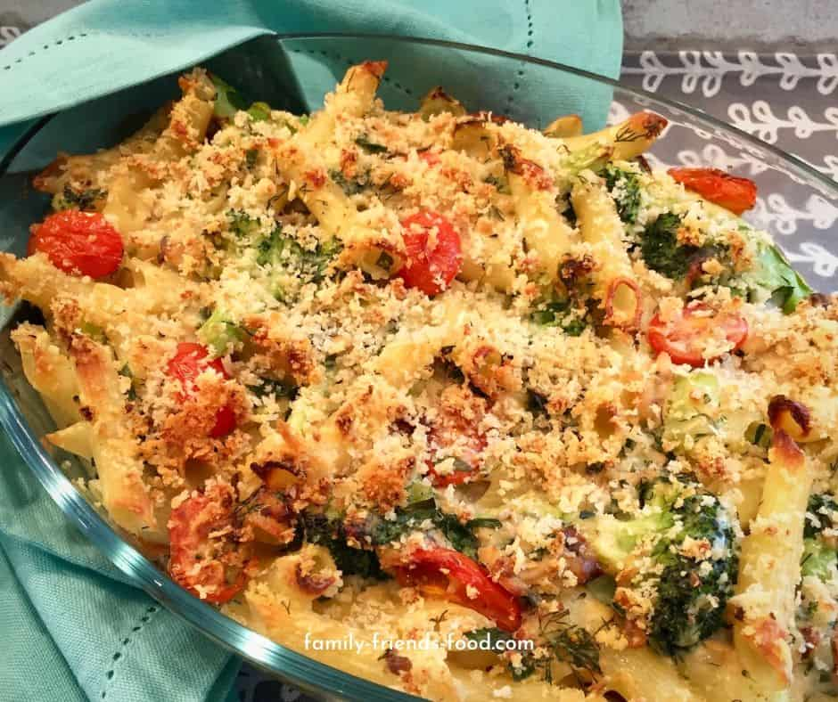

Italian Broccoli & Salmon Bake

scrumptious italian dish. very delcious, yes!
Ingredients
- 250g penne
- 300g broccoli, cut into large florets
- 25g butter
- 600ml milk
- 100g mascarpone
- Preheat the oven to 190C/gas 5/fan 170C and get out an ovenproof dish (measuring 20 by 30cm, and about 5cm deep). Meanwhile, put a large pan of water on to boil for the pasta. When it is boiling rapidly, tip in the pasta with a generous sprinkling of salt. Give it a stir, return to the boil and cook for 6 minutes. Add the broccoli, then return the water to the boil and cook for 4 minutes more, until the broccoli is on the firm side of just tender.
- While the pasta is cooking, put the butter, flour and milk in a large pan and heat, whisking or stirring continuously, until it thickens to make a smooth sauce. Remove from the heat and stir in the mascarpone, sun-dried tomatoes, capers (if using), anchovies (if using) and basil, then add the pasta and broccoli and season well.
- Halve the salmon fillets widthways (you will see that there is an obvious divide on each fillet) then place the pieces in a single layer on the base of the ovenproof dish. Spoon the broccoli mixture on top, then scatter with the grated cheddar. (You can chill this for up to 4 hours if you want to get ahead.)